第 1 页 · 数智人才培养

数智人才培养
AI通识精品系列
周苏 教授 QQ：81505050
人工智能通识教程

第 2 页 · 第6章
第6章
周苏 教授 QQ：81505050
神经网络与深度学习


第 3 页 · 深度学习属于机器学习的分支，是一种以人工神经网络为架构，对数据进行表征学习的算法。与传统机器学习相比，深度学习能够自动从
深度学习属于机器学习的分支，是一种以人工神经网络为架构，对数据进行表征学习的算法。与传统机器学习相比，深度学习能够自动从原始数据中提取高层次的抽象特征，减少了对人工设计特征的需求（见图6-1）。已经有多种深度学习框架，如深度神经网络、卷积神经网络、深度置信网络和递归神经网络，被应用在计算机视觉、语音识别、自然语言处理（NLP）与生物信息学等领域并获得了极好的效果，推动人工智能进入工业化阶段，具有很强的通用性，并具备标准化、自动化和模块化基本特征。
第6章 神经网络与深度学习
第 4 页 · 图6-1 通过多层神经网络实现
图6-1 通过多层神经网络实现
复杂模式的识别和预测
第6章 神经网络与深度学习
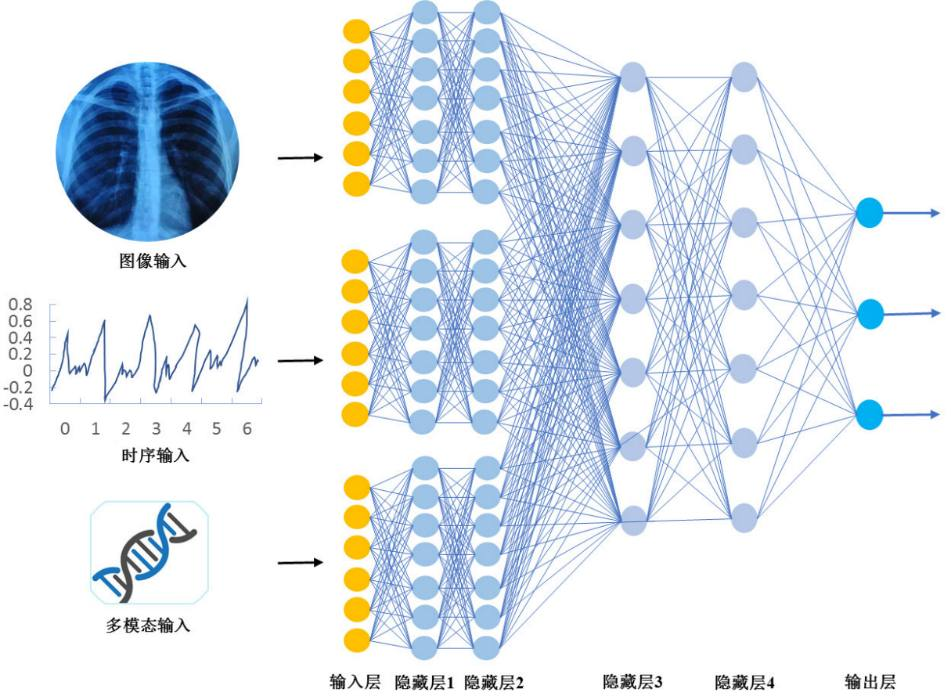
第 5 页 · 01

01
动物的中枢
神经系统
02
了解人工
神经网络
03
深度学习
的定义
04
卷积
神经网络
目录 / CONTENTS
05
迁移学习
06
深度学习
的应用
第 6 页 · PART 01
PART 01
动物的中枢神经系统
第 7 页 · 每当开始一项新的研究时，应该先了解是否已经存在现成可借鉴的解决方案。假设在1902年莱特兄弟成功进行飞行实验的前一年，你
每当开始一项新的研究时，应该先了解是否已经存在现成可借鉴的解决方案。假设在1902年莱特兄弟成功进行飞行实验的前一年，你突发奇想要设计一个人造飞行器，那么，你首先应该注意到，在自然界中飞行的“机器”实际上是存在的（鸟），由此得到启发，在你的飞机设计方案中可能要有两个大翼。同样，如果你想设计人工智能系统，那就要学习并分析这个星球上最自然的智能系统之一，即人脑神经系统。
6.1 动物的中枢神经系统
第 8 页 · 动物的中枢神经系统（CNS）与人脑神经系统既有相似之处，也存在显著差异。这些差异主要体现在结构复杂性、功能特化以及认知能
动物的中枢神经系统（CNS）与人脑神经系统既有相似之处，也存在显著差异。这些差异主要体现在结构复杂性、功能特化以及认知能力等方面。动物的中枢神经系统由大脑和脊髓组成，负责接收、处理并响应内外界环境的信息。和所有细胞一样，动物中枢神经系统中的神经细胞（神经元）具有含DNA（脱氧核糖核酸）的细胞核及含其他物质的细胞膜，细胞可以通过DNA复制的过程简单地复制遗传信息。它们比其他的大多数细胞的体积要大得多，这些神经细胞能够将从脚趾接收到的感觉印象再由脊柱底部传至全身。例如，长颈鹿颈部的神经元能够伸展至其身体的每个角落。
6.1.1 神经系统的结构
第 9 页 · 动物的神经元都具有类似的基本组成：细胞体、树突和轴突。
动物的神经元都具有类似的基本组成：细胞体、树突和轴突。
图6-2 生物神经元的基本构造
6.1.1 神经系统的结构
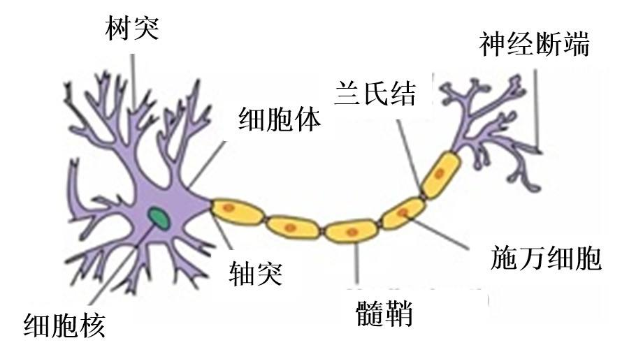
第 10 页 · 树突接收来自其他神经元的信息，轴突将信息传递给下一个神经元或目标细胞。每个神经元都由一个包含神经核的细胞体组成。许多从细
树突接收来自其他神经元的信息，轴突将信息传递给下一个神经元或目标细胞。每个神经元都由一个包含神经核的细胞体组成。许多从细胞体中分支出来的纤维状被称为树突，这些较短的分支细丝接收来自其他神经细胞的信号，其中单一分支的长纤维称为轴突。轴突伸展的距离很长，一般要长到1cm（是细胞体直径的100倍），也可以达到1m。一个细胞的轴突与另一个细胞的树突之间的连接部位被称为突触。一个神经元在突触的连接处与其他10～100 000个神经元建立连接。
6.1.1 神经系统的结构
第 11 页 · 神经细胞可被刺激激活，并沿轴突传导冲动。神经冲动要么存在要么不存在，无信号强弱之分。其他神经元的信号决定了神经元发送自身
神经细胞可被刺激激活，并沿轴突传导冲动。神经冲动要么存在要么不存在，无信号强弱之分。其他神经元的信号决定了神经元发送自身信号的可能性。这些来自其他细胞的信号可能提高或降低信号发送的概率，也能够改变其他信号的作用效果。有一部分神经元，除非接收到其他信号，否则自身不会发送信号；也有一部分神经元会不断重复发送信号，直到有其他信号进行干扰。一些信号的发送频率取决于它们接收到的信号。
6.1.1 神经系统的结构
第 12 页 · 信号通过复杂的电化学反应从一个神经元传递到其他神经元。这些信号可以在短期内控制大脑活动，还可以长期改变神经元的连通性。这
信号通过复杂的电化学反应从一个神经元传递到其他神经元。这些信号可以在短期内控制大脑活动，还可以长期改变神经元的连通性。这些机制被认为是大脑学习的基础。大多数信息都在大脑皮质（大脑的外层）中处理的。基本的组织单元似乎是直径约0.5mm的柱状组织，包含约20 000个神经元，并延伸到整个皮质（人类皮质深度约4mm）。
6.1.1 神经系统的结构
第 13 页 · 人脑是一种适应性系统，必须对变幻莫测的事物做出反应，而学习是通过修改神经元之间连接的强度来进行的。现在，生物学家和神经学
人脑是一种适应性系统，必须对变幻莫测的事物做出反应，而学习是通过修改神经元之间连接的强度来进行的。现在，生物学家和神经学家已经了解了在生物中个体神经元是如何相互交流的。动物神经系统由数以千万计的互连细胞组成，而人脑由100亿~1000亿个神经元组成。然而，并行的神经元集合如何形成功能单元仍然是一个谜。
6.1.2 神经系统学习机制
第 14 页 · 电信号通过树突流入细胞体。细胞体（或神经元胞体）是“数据处理”的地方。当存在足够的应激反应时，神经元就被激发了。换句话说
电信号通过树突流入细胞体。细胞体（或神经元胞体）是“数据处理”的地方。当存在足够的应激反应时，神经元就被激发了。换句话说，它发送一个微弱的电信号（以毫瓦为单位）到被称为轴突的电缆状突出。神经元通常只有单一的轴突，但会有许多树突。足够的应激反应指的是超过预定的阈值。电信号流经轴突，直接到达神经断端。细胞之间的轴突-树突（轴突-神经元胞体或轴突-轴突）接触称为神经元的突触。两个神经元之间实际上有一个小的间隔（几乎触及），这个间隙充满了导电流体，允许神经元间电信号的流动。脑激素（或摄入的药物，如咖啡因）影响了当前的电导率。
6.1.2 神经系统学习机制
第 15 页 · PART 02
PART 02
了解人工神经网络
第 16 页 · 人脑神经元彼此高度相连。一些神经元与另一些或另外几十个相邻的神经元通信，然后，其他神经元与数千个神经元共享信息。在过去数
人脑神经元彼此高度相连。一些神经元与另一些或另外几十个相邻的神经元通信，然后，其他神经元与数千个神经元共享信息。在过去数十年里，研究人员就是从这种自然典范中汲取灵感，设计人工神经网络。人工神经网络（ANN）是以人脑和神经系统为模型的机器学习算法。如今，人工神经网络从股票市场预测到汽车的自主控制，在模式识别、经济预测和许多其他应用领域都有突出的应用表现。
6.2 了解人工神经网络
第 17 页 · 与人脑神经系统类似，人工神经网络通过改变权重呈现出相同的适应性。在监督学习的ANN范式中，学习规则承担这个任务，通过比较
与人脑神经系统类似，人工神经网络通过改变权重呈现出相同的适应性。在监督学习的ANN范式中，学习规则承担这个任务，通过比较网络的表现与所希望的响应，相应地修改系统的权重。ANN主要有3种学习规则，即感知器学习、增量和反向传播。反向传播规则具有处理多层网络所需的能力，并且在许多应用中取得了广泛的成功。
6.2.1 人工神经网络的研究
第 18 页 · 在了解（并模拟）动物神经系统的行为的基础上，美国的麦卡洛克和皮茨开发了人工神经元的第一个模型。对应于生物神经网络的生物学
在了解（并模拟）动物神经系统的行为的基础上，美国的麦卡洛克和皮茨开发了人工神经元的第一个模型。对应于生物神经网络的生物学模型，人工神经元采用了以下4个要素：
（1）细胞体，对应于神经元的细胞体。
（2）输出通道，对应于神经元的轴突。
（3）输入通道，对应于神经元的树突。
（4）权重，对应于神经元的突触。
6.2.1 人工神经网络的研究
第 19 页 · 其中，权重（实值）扮演了突触的角色，反映生物突触的导电水平，用于调节一个神经元对另一个神经元的影响程度，控制着输入对单元
其中，权重（实值）扮演了突触的角色，反映生物突触的导电水平，用于调节一个神经元对另一个神经元的影响程度，控制着输入对单元的影响。人工神经元模仿了神经元的结构。
未经训练的神经网络模型很像新生儿：它们被创造出来的时候对世界一无所知，只有通过接触这个世界，也就是后天的知识，才会慢慢提高它们的认知程度。算法通过数据体验世界——人们试图通过在相关数据集上训练神经网络，来提高其认知程度。衡量进度的方法是通过监测网络产生的误差。
6.2.1 人工神经网络的研究
第 20 页 · 实际神经元运作时要积累电势能，当能量超过特定值时，突触前神经元会经轴突放电，继而刺激突触后神经元。人类有着数以亿计相互连
实际神经元运作时要积累电势能，当能量超过特定值时，突触前神经元会经轴突放电，继而刺激突触后神经元。人类有着数以亿计相互连接的神经元，其放电模式无比复杂。哪怕是最先进的神经网络也难以比拟人脑的能力，因此，神经网络在短时间内应该还无法模拟人脑的功能。
6.2.1 人工神经网络的研究
第 21 页 · 人工神经网络是一种仿生神经网络结构和功能的数学模型或计算模型，用于对函数进行估计或近似计算。大多数情况下，人工神经网络能
人工神经网络是一种仿生神经网络结构和功能的数学模型或计算模型，用于对函数进行估计或近似计算。大多数情况下，人工神经网络能在外界信息的基础上改变内部结构。
作为一种非线性统计性数据建模工具，典型的神经网络具有以下3个部分：
（1）结构：指定网络中的变量及其拓扑关系。例如，神经网络中的变量可以是神经元连接的权重和神经元的激励值。
6.2.2 典型的人工神经网络
第 22 页 · （2）激励函数：大部分神经网络模型具有一个短时间尺度的动力学规则，来定义神经元如何根据其他神经元的活动改变自己的激励值。
（2）激励函数：大部分神经网络模型具有一个短时间尺度的动力学规则，来定义神经元如何根据其他神经元的活动改变自己的激励值。一般激励函数依赖于网络中的权重（即该网络的参数）。
（3）学习规则：指定人工神经网络中的权重如何随着时间推进而调整。这一般被看做是一种长时间尺度的动力学规则。一般情况下，学习规则依赖于神经元的激励值，它也可能依赖于监督者提供的目标值和当前权重的值。
6.2.2 典型的人工神经网络
第 23 页 · 人脑平均包含1000亿个神经元，每个神经元又平均与7000个其他神经元相连，可以想象一下能够与人脑匹配的计算机得有多么庞
人脑平均包含1000亿个神经元，每个神经元又平均与7000个其他神经元相连，可以想象一下能够与人脑匹配的计算机得有多么庞大。每个突触需要一个基本操作，这样的操作每秒大约需要进行1000次，精确之后也就是每秒1017次。目前的一般家用电脑有四个处理器（四核），在写入时每个处理器的速度约为每秒109次操作。我们可以通过廉价硬件来实现每秒1011次操作，但至少需要100万个这样的处理器才能够匹配人脑。依照摩尔定律，在接下来的30年里，计算机的计算能力有望与人脑相匹敌。
6.2.3 类脑计算机
第 24 页 · 拥有速度更快的计算机也无法立即创建起人工智能，因为我们还需要了解如何编程。人工神经元比人类神经元简单，它们接收数以千计的
拥有速度更快的计算机也无法立即创建起人工智能，因为我们还需要了解如何编程。人工神经元比人类神经元简单，它们接收数以千计的输入，并对其进行叠加，如果总数超过阈值，则被激活。每一次输入都被设置一个可配置的权重，人类可以决定任何一次输入对总数的作用效果，如果权重为负值，则神经元的激活将被抑制。这些人工神经元可以用于构建计算机程序，但它们比目前使用的语言更复杂。不过，可以类比大脑将它们大量集合成群，并且改变所有输入的权重，然后根据需求管理整个系统，而不必弄清其工作原理。
6.2.3 类脑计算机
第 25 页 · 将这些神经元排列在至少三层结构中，一些情况下将多达30层，每一层都含有众多神经元，可能多达几千个。因此，一个完整的神经网
将这些神经元排列在至少三层结构中，一些情况下将多达30层，每一层都含有众多神经元，可能多达几千个。因此，一个完整的神经网络可能含有10万个或更多的个体神经元，每个神经元接收来自前一层其他神经元的输入，并将信号发送给后一层的所有神经元，我们向第一层注入信号并解释最后一层发出的信号，以此来进行操作。
6.2.3 类脑计算机
第 26 页 · PART 03
PART 03
深度学习的定义
第 27 页 · 深度学习起源于早期用计算电路模拟大脑神经元网络的工作，它假设具有复杂代数电路的形式，其“深度”的含义是指电路通常被设计成
深度学习起源于早期用计算电路模拟大脑神经元网络的工作，它假设具有复杂代数电路的形式，其“深度”的含义是指电路通常被设计成多层，意味着从输入到输出的计算路径包含较多计算步骤，且其中的连接强度是可调整的，通过深度学习方法训练的网络被称为神经网络，但它与真实的神经细胞和结构之间的相似性仅仅停留于表面。
6.3 深度学习的定义
第 28 页 · 深度学习学习样本数据的内在规律和表示层次，它在使用复杂机器学习算法的学习过程中所获得的信息，对诸如文字、图像识别和语音识
深度学习学习样本数据的内在规律和表示层次，它在使用复杂机器学习算法的学习过程中所获得的信息，对诸如文字、图像识别和语音识别等数据的解释有很大帮助，所取得的效果远远超过先前的相关技术，其最终目标是让机器能够像人一样具有分析学习能力。
深度学习的核心技术是：通过多层神经网络自动从大量数据中学习特征表示，从而实现对复杂模式的识别和预测。
6.3.1 深度学习核心技术
第 29 页 · （1）神经网络（NNs）：模拟生物神经系统的工作原理，由多个节点（神经元）组成，通过权重连接形成层次结构。每一层负责捕捉
（1）神经网络（NNs）：模拟生物神经系统的工作原理，由多个节点（神经元）组成，通过权重连接形成层次结构。每一层负责捕捉特定类型特征，随着层数增加，模型可以学习到更加复杂的表示。
（2）卷积神经网络（CNNs）：广泛应用于图像识别任务，因其局部感知野和权值共享机制，非常适合处理二维空间信息。
（3）循环神经网络（RNNs）：适用于序列数据处理，如NLP、语音识别等。LSTM（长短期记忆网络）和GRU（门控循环单元）是RNN的变体，解决了传统RNN中的梯度消失问题。
6.3.1 深度学习核心技术
第 30 页 · （4）变压器（Transformers）：这是近年来兴起的一种以自注意力机制闻名的新型架构，能够在不依赖递归的情况下高效
（4）变压器（Transformers）：这是近年来兴起的一种以自注意力机制闻名的新型架构，能够在不依赖递归的情况下高效处理长距离依赖关系，在大规模文本生成、翻译等方面表现出色。
6.3.1 深度学习核心技术
第 31 页 · 深度学习的主要特点如下。
深度学习的主要特点如下。
（1）自动化特征学习：深度学习模型可以通过大量参数自动调整内部表征，从而减少对外部特征工程的依赖。
（2）大数据驱动：深度学习通常需要大量的标注数据来进行有效的训练，这使得它在互联网、社交媒体等数据丰富的领域具有优势。
（3）高性能计算资源：由于模型复杂度高，训练过程往往需要强大的GPU集群支持，以及优化后的框架（如TensorFlow、PyTorch）。
6.3.1 深度学习核心技术
第 32 页 · 与传统机器学习所述的一些方法相比，深度学习尤其是在处理图像等高维数据时具有明显的优势。例如，虽然线性回归和逻辑回归等方法
与传统机器学习所述的一些方法相比，深度学习尤其是在处理图像等高维数据时具有明显的优势。例如，虽然线性回归和逻辑回归等方法可以处理大量的输入变量，但每个样本从输入到输出的计算路径都非常短——只是乘以某个权重后加到总输出中。此外，不同的输入变量各自独立地影响输出而不相互影响（见图6-3(a)）。这大大限制了这些模型的表达能力。它们只能表示输入空间中的线性函数与边界，而真实世界中的大多数概念要比这复杂得多。
6.3.2 深度学习的优势
第 33 页 · （a）浅层模型，例如线性回归，其输入到输出之间的计算路径很短。
（a）浅层模型，例如线性回归，其输入到输出之间的计算路径很短。
（b）决策列表网络中可能存在某些具有长计算路径的输入，但大多数计算路径都较短。
（c）深度学习网络具有更长的计算路径，且每个变量都能与所有其他变量相互作用。
图6-3 学习的计算路径
6.3.2 深度学习的优势
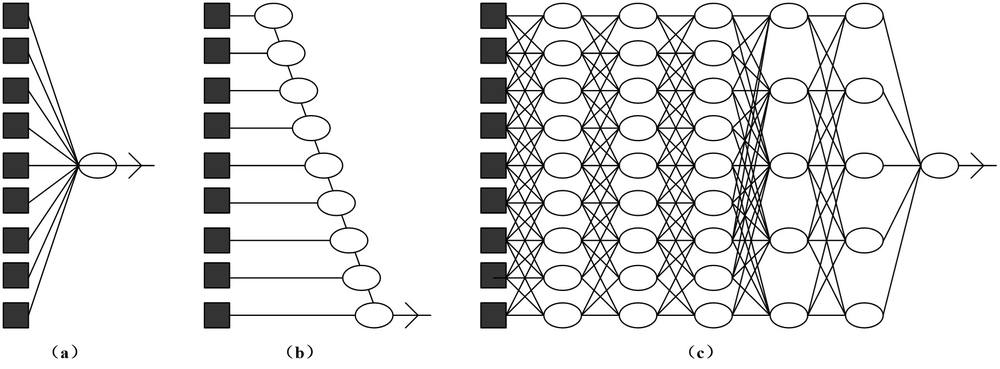
第 34 页 · 另外，决策列表和决策树能够实现较长的计算路径，这些路径可能依赖于较多的输入变量，但只是对很小的一部分输入向量而言（见图6
另外，决策列表和决策树能够实现较长的计算路径，这些路径可能依赖于较多的输入变量，但只是对很小的一部分输入向量而言（见图6-3(b)）。如果一个决策树对一定部分的可能输入有很长的计算路径，那么它的输入变量的数量必将是指数级的。深度学习的基本思想是训练电路，使其计算路径可以很长，进而使得所有输入变量之间以复杂的方式相互作用（见图6-3(c)）。事实证明，这些电路模型具有足够的表达能力，它们在许多重要类型的学习问题中都能够拟合复杂的真实数据。
6.3.2 深度学习的优势
第 35 页 · 以往很多算法是线性的，而现实世界大多数事情的特征是复杂非线性的。比如猫的图像中，就包含了颜色、形态、五官、光线等各种信息
以往很多算法是线性的，而现实世界大多数事情的特征是复杂非线性的。比如猫的图像中，就包含了颜色、形态、五官、光线等各种信息。深度学习的关键就是通过多层非线性映射将这些因素成功分开。
与浅层相比，简单地说，多层神经网络就是可以减少参数。因为它重复利用中间层的计算单元。以认猫为例，它学习猫的分层特征：最底层从原始像素开始，刻画局部的边缘和纹；中层把各种边缘进行组合，描述不同类型的猫的器官；最高层描述的是整个猫的全局特征。
6.3.3 深度学习的意义
第 36 页 · 深度学习需要具备超强的计算能力，同时还不断有海量数据的输入。特别是在信息表示和特征设计方面，过去大量依赖人工，严重影响有
深度学习需要具备超强的计算能力，同时还不断有海量数据的输入。特别是在信息表示和特征设计方面，过去大量依赖人工，严重影响有效性和通用性。深度学习则彻底颠覆了“人造特征”的范式，开启了数据驱动的“表示学习”范式——由数据自提取特征，计算机自己发现规则，进行自学习。可以这样理解：过去，人们对经验的利用靠人类自己完成。而深度学习中，经验以数据形式存在。因此，深度学习就是关于从数据中产生模型的算法，即深度学习算法。
6.3.3 深度学习的意义
第 37 页 · 以往的算法模式，数学上叫线性，x和y的关系是对应的，它是一种函数体现的映射。但这种算法在海量数据面前遇到了瓶颈。国际上著
以往的算法模式，数学上叫线性，x和y的关系是对应的，它是一种函数体现的映射。但这种算法在海量数据面前遇到了瓶颈。国际上著名的ImageNet图像分类大赛，用传统算法，识别错误率一直降不下去，采用深度学习后，错误率大幅降低。在2010年，获胜的系统只能正确标记72%的图片；到了2012年，多伦多大学的杰夫·辛顿利用深度学习的新技术，带领团队实现了85%的准确率；2015年的ImageNet竞赛上，一个深度学习系统以96%的准确率第一次超过了人类（人类平均有95%的准确率）。计算机认图的能力已经超过人，尤其在图像和语音等复杂应用方面，深度学习技术取得了优越的性能。
6.3.3 深度学习的意义
第 38 页 · 定义：深度学习是一种特殊的机器学习，通过学习将现实使用嵌套的概念层次来表示并实现巨大的功能和灵活性，其中每个概念都定义为
定义：深度学习是一种特殊的机器学习，通过学习将现实使用嵌套的概念层次来表示并实现巨大的功能和灵活性，其中每个概念都定义为与简单概念相关联，而更为抽象的表示则以较不抽象的方式来计算。
通过多层处理，逐渐将初始的“低层”特征表示转化为“高层”特征表示后，用“简单模型”即可完成复杂的分类等学习任务。由此，可将深度学习理解为进行“特征学习”或“表示学习”。
6.3.3 深度学习的意义
第 39 页 · 支持图像识别技术骄人成绩的通常是深度神经网络，借助于特征可视化这个强大工具，能帮我们理解神经网络究竟是怎样认识图
支持图像识别技术骄人成绩的通常是深度神经网络，借助于特征可视化这个强大工具，能帮我们理解神经网络究竟是怎样认识图
像的。
现在，计算机视觉模型中每一层所检测的东西都可以
可视化。经过在一层层神经网络中的传递，会逐渐对
图片进行抽象：先探测边缘，然后用这些边缘来检测
纹理，再用纹理检测模式，用模式检测物体的部分
……
图6-4 神经网络的可视化
6.3.4 神经网络理解图片
第 40 页 · 图6-5是ImageNet（一个用于视觉对象识别软件研究的大型可视化数据库项目）训练的GoogLeNet的特征可视化图，
图6-5是ImageNet（一个用于视觉对象识别软件研究的大型可视化数据库项目）训练的GoogLeNet的特征可视化图，我们可以从中看出它的每一层是如何对图片进行抽象的。
图6-5 训练用的特征可视化图
6.3.4 神经网络理解图片
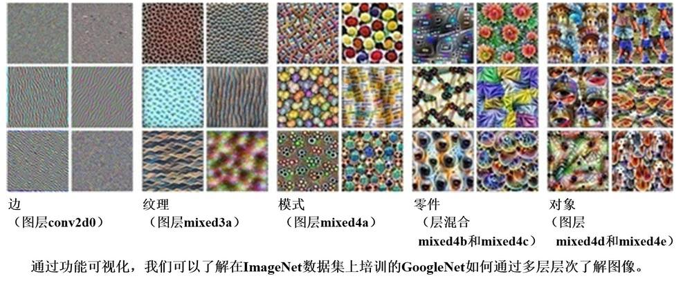
第 41 页 · 在神经网络处理图像的过程中，单个神经元不能理解任何东西，它们需要协作。所以，我们也需要理解它们彼此之间如何交互。通过在神
在神经网络处理图像的过程中，单个神经元不能理解任何东西，它们需要协作。所以，我们也需要理解它们彼此之间如何交互。通过在神经元之间插值，使神经元之间彼此交互。图6-6就展示了两个神经元是如何共同表示图像的。
图6-6 两个神经元共同表示图像
6.3.4 神经网络理解图片
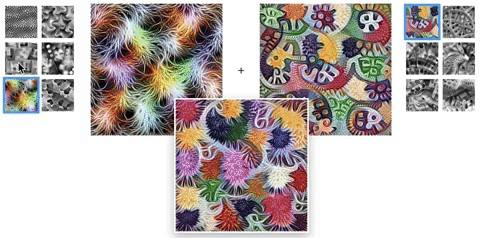
第 42 页 · 在进行特征可视化时，得到的结果通常会布满噪点和无意义的高频图案。要更好地理解神经网络模型是如何工作的，就要避开这些高频图
在进行特征可视化时，得到的结果通常会布满噪点和无意义的高频图案。要更好地理解神经网络模型是如何工作的，就要避开这些高频图案。这时所用的方法是进行预先规则化，或者说约束、预处理。
神经网络的主要缺点是其不透明性，换句话说它们不能解释结果。了解神经网络内部的工作原理，也是增强人工智能可解释性的一种途径，而特征可视化正是其中一个很有潜力的研究方向。神经网络已经得到了广泛应用，解决了控制、搜索、优化、函数近似、模式关联、聚类、分类和预测等领域的问题。
6.3.4 神经网络理解图片
第 43 页 · 下面通过几个例子来了解深度学习的方法。
下面通过几个例子来了解深度学习的方法。
示例1：识别正方形。
先从一个简单例子开始，从概念层面上解释究竟发生了什么事情。我们试试看如何从多个形状中识别正方形。
6.3.5 深度学习示例
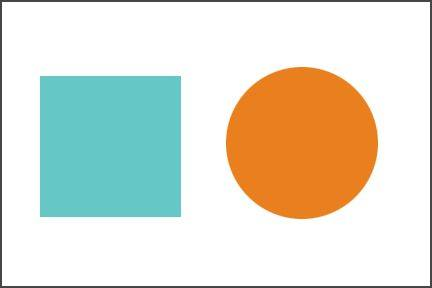
第 44 页 · 第一件事是检查图中是否有四条线（简单的概念）。如果找到这样的四条线，进一步检查它们是相连的、闭合的和相互垂直的，并且它们
第一件事是检查图中是否有四条线（简单的概念）。如果找到这样的四条线，进一步检查它们是相连的、闭合的和相互垂直的，并且它们是否相等（嵌套的概念层次结构）。
这样就完成了一个复杂的任务（识别一个正方形），并以简单、不太抽象的任务来完成它。深度学习本质上在大规模执行类似的逻辑。
6.3.5 深度学习示例
第 45 页 · 示例2：识别猫。
示例2：识别猫。
我们通常能用很多属性描述一个事物。其中有些属性可能很关键，很有用，另一些属性可能没什么用。我们就将属性称为特征。特征辨识是一个数据处理的过程。
传统算法认猫，是标注各种特征去认：大眼睛，有胡子，有花纹。但这种特征写着写着，可能分不出是猫还是老虎了，狗和猫也分不出来。这种方法叫——人制定规则，机器学习这种规则。
6.3.5 深度学习示例
第 46 页 · 深度学习的方法是，直接给你百万张图片，说这里有猫，再给你百万张图，说这里没猫，然后来训练深度网络，通过深度学习自己去学猫
深度学习的方法是，直接给你百万张图片，说这里有猫，再给你百万张图，说这里没猫，然后来训练深度网络，通过深度学习自己去学猫的特征，计算机就知道了，谁是猫。
图6-8 从视频里面寻找猫的图片是
深度学习接触性能的首次展现
6.3.5 深度学习示例
第 47 页 · 示例3：训练机械手学习抓取动作。
示例3：训练机械手学习抓取动作。
训练机械手学习抓取动作，传统方法肯定是针对机械手写好函数，移动到xyz标注的空间点，利用程序实现一次抓取。而谷歌用机器人训练一个深度神经网络，帮助机器人根据摄像头输入和电机命
令，预测抓取的结果。简单地说，就是训练机器
人的手眼协调。机器人会观测自己的机械臂，实
时纠正抓取运动。所有行为都从学习中自然浮现。
6.3.5 深度学习示例
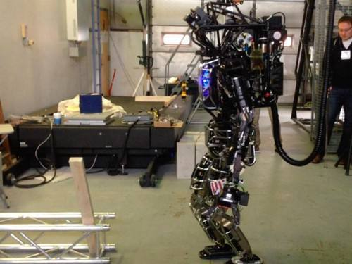
第 48 页 · 为了加快学习进程，谷歌公司用14个机械手同时工作，在将近3000小时的训练，相当于80万次抓取尝试后，开始看到智能反应行
为了加快学习进程，谷歌公司用14个机械手同时工作，在将近3000小时的训练，相当于80万次抓取尝试后，开始看到智能反应行为的出现。资料显示，没有训练的机械手，前30次抓取失败率为34%，而训练后，失败率降低到18%。这就是一个自我学习的过程。
6.3.5 深度学习示例
第 49 页 · 示例4：训练人工神经网络写文章。
示例4：训练人工神经网络写文章。
斯坦福大学的计算机博士安德烈·卡帕蒂曾用托尔斯泰的小说《战争与和平》来训练人工神经网络。每训练100个回合，就叫它写文章。在100次训练后，它就知道要加空格，但仍然有时是在“胡言乱语”（乱码）。500个回合后，能正确拼写一些短单词。1200个回合后，有标点符号和长单词。2000个回合后，已经可以正确拼写更复杂的语句。
6.3.5 深度学习示例
第 50 页 · 整个演化过程是个什么情况呢？
整个演化过程是个什么情况呢？
以前我们写文章，只要告诉主谓宾，就是规则。而这个过程，完全没人告诉机器语法规则。甚至，连标点和字母区别都不用告诉它。不告诉机器任何程序。只是不停地用原始数据进行训练，一层一层训练，最后输出结果——就是一个个看得懂的语句。
一切看起来都很有趣。人工智能与深度学习的美妙之处，也正在于此。
6.3.5 深度学习示例
第 51 页 · 示例5：图像深度信息采集。
示例5：图像深度信息采集。
市面上的无人机可以实现对人的跟踪。它的方法是什么呢？一个人，在图像系统里是一堆色块的组合。通过人工方式进行特征选择，比如颜色特征，梯度特征。以颜色特征为例：比如你穿着绿色衣服，突然走进草丛，就可能跟丢。或者他脱了件衣服，几个人很相近，也容易跟丢。
此时，若想在这个基础上继续优化，将颜色特征进行某些调整是非常困难的，而且调整后，还会存在对过去某些状况不适用的问题。这样的算法需要不停迭代，迭代又会影响前面的效果。
6.3.5 深度学习示例
第 52 页 · 硅谷有个团队利用深度学习，把所有人脑袋做出来，只区分好前景和背景。区分之后，背景全部用数学方式随意填充，再不断生产大量背
硅谷有个团队利用深度学习，把所有人脑袋做出来，只区分好前景和背景。区分之后，背景全部用数学方式随意填充，再不断生产大量背景数据，进行自学习。只要把前景学习出来就行。
很多传统方法是采用双目视觉，用计算机去做局部匹配，再根据双目测出的两个匹配的差距，去推算空间另一个点和它的三角位置，从而判断离你多远。
可想而知，深度学习的出现，使得很多公司辛苦积累的软件算法直接作废了。“算法作为核心竞争力”正在转变为“亿数据作为核心竞争力”，我们必须进入新的起跑线。
6.3.5 深度学习示例
第 53 页 · 示例6：做胃镜检查。
示例6：做胃镜检查。
胃不舒服做检查，常常会需要做胃镜，甚至要分开做肠、胃镜检查，而且通常小肠还看不见。有一家公司出了一种胶囊摄像头。将摄像头吃进去后，在人体消化道内每5秒拍一幅图，连续摄像，此后再排出胶囊。这样，所有关于肠道和胃部的问题，全部完整记录。但光是等医生把这些图看完就需要五个小时。原本的机器主动检测漏检率高，还需要医生复查。
6.3.5 深度学习示例
第 54 页 · 后来采用深度学习。采集8000多例图片数据灌进去，用机器不断学，不仅提高诊断精确率，减少了医生的漏诊以及对好医生的经验依
后来采用深度学习。采集8000多例图片数据灌进去，用机器不断学，不仅提高诊断精确率，减少了医生的漏诊以及对好医生的经验依赖，只需要靠机器自己去学习规则。深度学习算法，可以帮助医生作出决策。
资深学者本吉奥有一段话讲得特别好，引用如下：“科学不是一场战斗，而是一场建立在彼此想法上的合作。科学是一种爱，而不是战争，热爱周围世界的美丽，热爱分享和共同创造美好的事物。从情感上说，这使得科学成为一项令人非常赏心悦目的活动！”
6.3.5 深度学习示例
第 55 页 · 结合机器学习近年来的迅速发展来看本吉奥的这段话，就可以感受到其中的深刻含义。未来哪种机器学习算法会成为热点呢？资深专家吴
结合机器学习近年来的迅速发展来看本吉奥的这段话，就可以感受到其中的深刻含义。未来哪种机器学习算法会成为热点呢？资深专家吴恩达曾表示，“在继深度学习之后，迁移学习将引领下一波机器学习技术”。
6.3.5 深度学习示例
第 56 页 · 机器学习和深度学习都是推动现代AI发展的关键技术。虽然它们各自有独特的特性和应用场景，但在很多情况下是可以相辅相成的。
机器学习和深度学习都是推动现代AI发展的关键技术。虽然它们各自有独特的特性和应用场景，但在很多情况下是可以相辅相成的。
（1）适用场景差异：传统机器学习更合适于较小规模的数据集或较为简单的任务；而对于大型复杂任务，尤其是涉及多媒体内容时，深度学习则显示出更大的潜力。
（2）互补作用：两者可以结合使用。例如，在一些实际项目中，可能会先用机器学习方法进行初步筛选或预处理，然后再利用深度学习进一步优化结果。
6.3.6 机器学习与深度学习的关系
第 57 页 · 深度学习本质上是机器学习的一部分，但它采用了更复杂的模型和算法，特别是在处理非结构化数据（如图像、音频、文本）方面取得了
深度学习本质上是机器学习的一部分，但它采用了更复杂的模型和算法，特别是在处理非结构化数据（如图像、音频、文本）方面取得了显著成就。随着技术的进步，可以期待这两个领域将继续交叉融合，带来更多创新性的解决方案。
6.3.6 机器学习与深度学习的关系
第 58 页 · PART 04
PART 04
卷积神经网络
第 59 页 · 在数学泛函分析中，所谓卷积是指通过两个函数生成第三个函数的一种数学运算，其本质是一种特殊的表征函数f与g，经过翻转和平移
在数学泛函分析中，所谓卷积是指通过两个函数生成第三个函数的一种数学运算，其本质是一种特殊的表征函数f与g，经过翻转和平移，重叠部分函数值乘积对重叠长度的积分变换。如果将参加卷积的一个函数看作区间的指示函数，卷积还可以被看作是“滑动平均”的推广。
6.4 卷积神经网络
第 60 页 · 卷积神经网络是用来分析视觉图像的强大的深度学习模型，它是包含卷积计算且具有深度结构的前馈神经网络，类似于人工神经网络的多
卷积神经网络是用来分析视觉图像的强大的深度学习模型，它是包含卷积计算且具有深度结构的前馈神经网络，类似于人工神经网络的多层感知器，也是深度学习的代表算法之一。卷积神经网络的创始人是著名的计算机科学家杨立昆，他是第一个通过卷积神经网络在MNIST数据集（美国国家标准与技术研究院收集整理的大型手写数字数据库，其中包含60 000个示例的训练集以及10 000个示例的测试集）上解决手写数字问题的人。
6.4.1 为什么选择卷积
第 61 页 · 卷积神经网络的出现受到了生物处理过程的启发，因为神经元之间的连接模式类似于动物的视觉皮层组织。个体皮层神经元仅在被称为感
卷积神经网络的出现受到了生物处理过程的启发，因为神经元之间的连接模式类似于动物的视觉皮层组织。个体皮层神经元仅在被称为感受野的视野受限区域中对刺激作出反应，不同神经元的感受野
部分重叠，使得它们能够覆盖整个视野。人们在
谈论任何类型的神经网络时，总会提到一点神经
科学以及人类大脑的相关知识，这些知识成为创
建深度学习模型的主要灵感来源。
图6-10 人的视觉皮层组织
6.4.1 为什么选择卷积
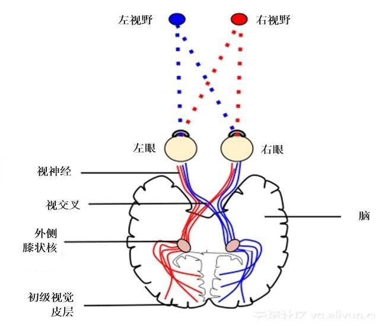
第 62 页 · 顾名思义，前馈网络是只在一个方向上有连接的网络，也就是说，它是一个有向无环图且有指定的输入和输出节点。每个节点计算一个输
顾名思义，前馈网络是只在一个方向上有连接的网络，也就是说，它是一个有向无环图且有指定的输入和输出节点。每个节点计算一个输入函数，并将结果传递给网络中的后续节点。信息从输入节点流向输出节点从而通过网络，且没有环路。循环网络将其中间输出或最终输出反馈到自己的输入中，使网络中的信号值形成一个具有内部状态或记忆的动态系统。
6.4.1 为什么选择卷积
第 63 页 · 卷积神经网络的架构与常规人工神经网络架构非常相似，特别是在网络的最后一层，即全连接，注意到卷积神经网络能够接受多个特征图
卷积神经网络的架构与常规人工神经网络架构非常相似，特别是在网络的最后一层，即全连接，注意到卷积神经网络能够接受多个特征图作为输入，而不是向量。卷积神经网络具有表
征学习能力，能够按其阶层结构
对输入信息进行平移不变分类。
6.4.1 为什么选择卷积
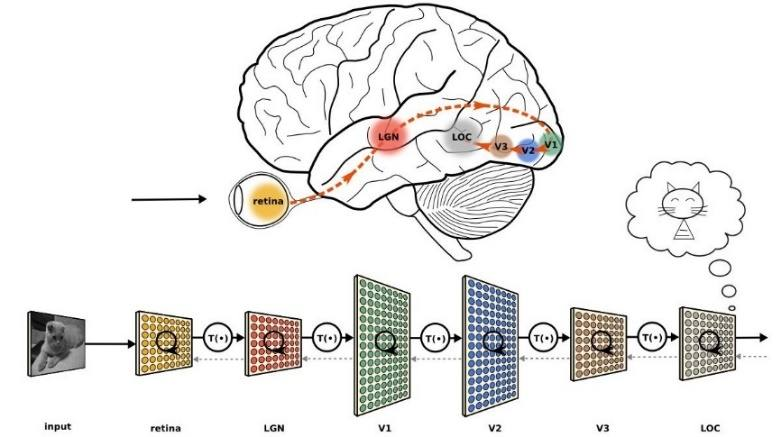
第 64 页 · 卷积神经网络的经典用例是执行图像分类，例如分析宠物的图像并确定它是猫还是狗。这个任务如果用全连接神经网络来处理（大尺寸图
卷积神经网络的经典用例是执行图像分类，例如分析宠物的图像并确定它是猫还是狗。这个任务如果用全连接神经网络来处理（大尺寸图像），具有三个明显的缺点：
（1）首先，将图像展开为向量会丢失空间信息。
（2）其次，需要训练的参数过多会导致效率低下，训练困难，难以以最快方式解决计算成本高昂的任务。
（3）大量参数很快会导致网络过拟合，而卷积神经网络参数少，可以避免过拟合现象。
6.4.1 为什么选择卷积
第 65 页 · 例如，用于处理计算机视觉问题的图像通常是224×224或更大。想象一下，构建一个神经网络来处理224×224彩色图像：包
例如，用于处理计算机视觉问题的图像通常是224×224或更大。想象一下，构建一个神经网络来处理224×224彩色图像：包括图像中的3个彩色通道（RGB），得到224×224×3 = 150 528个输入特征。在这样的网络中，一个典型的隐含层可能有1024个节点，因此必须为第一层单独训练150 528×1024 = 1.5亿多个权重。这样巨大的网络几乎不可能训练。其实，图像的好处之一是，其像素在相邻的上下文中最有用，图像中的物体是由小的局部特征组成的，比如眼睛的圆形虹膜或一张纸的方角。一个隐藏层中的每个节点都要查看每个像素，这会很浪费时间。
6.4.1 为什么选择卷积
第 66 页 · 此外，位置可能会改变。如果训练一个网络来检测狗，你希望能够检测狗，而不管它出现在图像的什么地方。想象一下，训练一个网络，
此外，位置可能会改变。如果训练一个网络来检测狗，你希望能够检测狗，而不管它出现在图像的什么地方。想象一下，训练一个网络，它能很好地处理特定的狗的图像，然后，给它喂食的是同一图像的一个稍微偏移的版本，狗就不会激活相同的神经元，网络反应会完全不同。
6.4.1 为什么选择卷积
第 67 页 · 与常规神经网络不同，卷积神经网络各层中的神经元是3维排列的：宽度、高度和深度。其中的宽度和高度是很好理解的，因为本身卷积
与常规神经网络不同，卷积神经网络各层中的神经元是3维排列的：宽度、高度和深度。其中的宽度和高度是很好理解的，因为本身卷积就是一个二维模板，但是在卷积神经网络中的深度指的是激活数据体的第三个维度，而不是整个网络的深度，整个网络的深度指的是网络的层数。例如，使用图6-12中的图像是作为卷积神经网络的输入，该输入数据体的维度是32×32×3（宽度、高度和深度），层中的神经元将只与前一层中的一小块区域连接，而不是采取全连接方式。
6.4.2 卷积神经网络结构
第 68 页 · 图6-12 全连接神经网络与卷积神经网络的对比
图6-12 全连接神经网络与卷积神经网络的对比
6.4.2 卷积神经网络结构
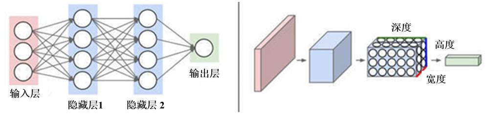
第 69 页 · 对于用来分类图中图像的卷积网络，其最后的输出层的维度是1×1×10，因为在卷积神经网络结构的最后部分将会把全尺寸的图像压
对于用来分类图中图像的卷积网络，其最后的输出层的维度是1×1×10，因为在卷积神经网络结构的最后部分将会把全尺寸的图像压缩为包含分类评分的一个向量，向量是在深度方向排列的。
6.4.2 卷积神经网络结构
第 70 页 · 图6-12中左侧是一个3层的神经网络，右侧是一个神经元在3个维度（宽、高和深度）排列的卷积神经网络。卷积神经网络的每一层
图6-12中左侧是一个3层的神经网络，右侧是一个神经元在3个维度（宽、高和深度）排列的卷积神经网络。卷积神经网络的每一层都将3D的输入数据变化为神经元3D的激活数据并输出。在图6-12右侧，左边输入层代表输入图像，它的宽度和高度就是图像的宽度和高度，它的深度是3（代表红、绿、蓝3种颜色通道），第2部分是经过卷积和池化之后的激活值（也可以看做是神经元） ，后面是接着的卷积池化层。
6.4.2 卷积神经网络结构
第 71 页 · 池化层（见图6-13）所做的就是减小输入的大小，其核心目标之一是提供空间方差，这意味着即使它的外观以某种方式发生改变都能
池化层（见图6-13）所做的就是减小输入的大小，其核心目标之一是提供空间方差，这意味着即使它的外观以某种方式发生改变都能将对象识别出来。池化层通常由一个简单的操作完成，比如最大、最小（或平均。有两种广泛使用的池化操作——平均池化和最大池化，其中最大池化使用更多，其效果一般要优于平均池化。池化层减小特征空间维度但不会减小深度。当使用最大池化层时，采用输入区域的最大数量，而当使用平均池化时，采用输入区域的平均值。
6.4.2 卷积神经网络结构
第 72 页 · 图6-13 卷积神经网络的处理过程
图6-13 卷积神经网络的处理过程
6.4.2 卷积神经网络结构
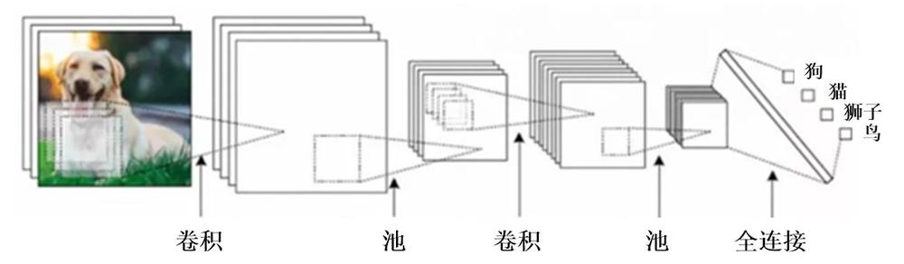
第 73 页 · PART 05
PART 05
迁移学习
第 74 页 · 随着机器学习的应用场景越来越多，许多表现比较好的监督学习需要大量的标注数据，这是一项枯燥无味且花费巨大的任务，于是，迁移
随着机器学习的应用场景越来越多，许多表现比较好的监督学习需要大量的标注数据，这是一项枯燥无味且花费巨大的任务，于是，迁移学习受到越来越多的关注。
传统机器学习（主要指监督学习）通常基于同分布假设，需要大量的标注数据，然而实际使用过程中不同数据集可能存在一些问题，比如：
（1）数据分布差异。
（2）标注数据过期，也就是好不容易标定的数据要被丢弃，有些应用中数据是分布随着时间推移会有变化。
6.5 迁移学习
第 75 页 · 人在实际生活中有很多迁移学习，比如会骑自行车就比较容易学摩托车，会了C语言再学其他编程语言会简单很多。如何充分利用之前标
人在实际生活中有很多迁移学习，比如会骑自行车就比较容易学摩托车，会了C语言再学其他编程语言会简单很多。如何充分利用之前标注好的数据（废物利用），同时又保证在新任务上的模型精度？基于这样的需求来研究迁移学习，即：将某个领域或任务上学习到的知识或模式应用到不同但相关的领域或问题中，或者说从相关领域中迁移标注数据或者知识结构、完成或改进目标领域或任务的学习效果（见图6-14）。
6.5 迁移学习
第 76 页 · 图6-14 迁移学习的考虑
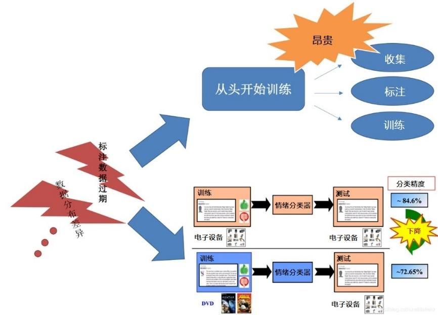
图6-14 迁移学习的考虑
6.5 迁移学习
第 77 页 · 在一个商品评论情感分析的例子中，包含两个不同的产品领域：图书领域和家具领域。在图书领域，通常用“宽阔”“品质创作”等词汇
在一个商品评论情感分析的例子中，包含两个不同的产品领域：图书领域和家具领域。在图书领域，通常用“宽阔”“品质创作”等词汇来表达正面情感，而在家具领域中却由“锋利”“轻巧”等词汇来表达正面情感。任务中不同领域的不同情感词多数不发生重叠、存在领域独享词、且词汇在不同领域出现的频率显著不同，因此会导致领域间的概率分布失配问题。
6.5 迁移学习
第 78 页 · 迁移学习的关键点是：
迁移学习的关键点是：
（1）研究不同领域之间有哪些共有知识可以迁移——迁移什么。
（2）在找到迁移对象后，针对具体问题采用哪种迁移学习的特定算法，即如何设计出合适的算法来提取和迁移共有知识——如何迁移。
（3）研究什么情况下适合迁移，迁移技巧是否适合具体应用以及负迁移问题——何时迁移。
6.5 迁移学习
第 79 页 · 负迁移是旧知识对新知识学习的阻碍作用，比如学习了三轮车之后对骑自行车的影响，学习汉语拼音对学英文字母的影响。需要研究如何
负迁移是旧知识对新知识学习的阻碍作用，比如学习了三轮车之后对骑自行车的影响，学习汉语拼音对学英文字母的影响。需要研究如何利用正迁移，避免负迁移。
迁移学习的不同类别如下。
（1）基于实例的迁移。基于实例的迁移学习研究如何从源领域中挑选出对目标领域的训练有用的实例，比如对源领域的有标记数据实例，进行有效的权重分配，让源域实例分布接近目标域的实例分布，从而在目标领域中建立一个分类精度较高的、可靠地学习模型。
6.5 迁移学习
第 80 页 · 负迁移是旧知识对新知识学习的阻碍作用，比如学习了三轮车之后对骑自行车的影响，学习汉语拼音对学英文字母的影响。需要研究如何
负迁移是旧知识对新知识学习的阻碍作用，比如学习了三轮车之后对骑自行车的影响，学习汉语拼音对学英文字母的影响。需要研究如何利用正迁移，避免负迁移。
6.5 迁移学习
第 81 页 · 迁移学习的不同类别如下。
迁移学习的不同类别如下。
（1）基于实例的迁移。基于实例的迁移学习研究如何从源领域中挑选出对目标领域的训练有用的实例，比如对源领域的有标记数据实例，进行有效的权重分配，让源域实例分布接近目标域的实例分布，从而在目标领域中建立一个分类精度较高的、可靠地学习模型。
因为迁移学习中源领域与目标领域的数据分布是不一致，所以源领域中所有有标记的数据实例不一定都对目标领域有用。
6.5 迁移学习
第 82 页 · （2）基于特征的迁移。
（2）基于特征的迁移。
· 特征选择。基于特征选择的迁移学习算法，关注的是如何找出源领域与目标领域之间共同的特征表示，然后利用这些特征进行知识迁移。
· 特征映射。基于特征映射的迁移学习算法，关注的是如何将源领域和目标领域的数据从原始特征空间映射到新的特征空间中去。在该空间中，源领域数据与的目标领域的数据分布相同，从而可以在新的空间中，更好地利用源领域已有的有标记数据样本进行分类训练，最终对目标领域的数据进行分类测试。
6.5 迁移学习
第 83 页 · （3）基于共享参数的迁移。研究如何找到源数据和目标数据的空间模型之间的共同参数或者先验分布，从而可以通过进一步处理，达到
（3）基于共享参数的迁移。研究如何找到源数据和目标数据的空间模型之间的共同参数或者先验分布，从而可以通过进一步处理，达到知识迁移的目的，假设前提是，学习任务中的的每个相关模型会共享一些相同的参数或者先验分布。
6.5 迁移学习
第 84 页 · PART 06
PART 06
深度学习的应用
第 85 页 · 深度学习应用广泛，在搜索技术、数据挖掘、机器学习、视觉识别、自然语言处理、机器翻译、语音识别和合成、推荐和个性化技术，以
深度学习应用广泛，在搜索技术、数据挖掘、机器学习、视觉识别、自然语言处理、机器翻译、语音识别和合成、推荐和个性化技术，以及其他领域都取得很多成果，解决了很多复杂难题，使人工智能相关技术取得了很大进步。
来看一个例子以进一步理解它。假设要制作一个能够识别图像中不同人物面部的系统。 如果我们将此作为典型的机器学习问题来解决，采用深度学习方法自动找出对分类很重要的特征，定义面部特征，例如眼睛、鼻子、耳朵等（见图6-15）。
6.6 深度学习的应用
第 86 页 · 图6-15 深度网络人脸识别
图6-15 深度网络人脸识别
6.6 深度学习的应用
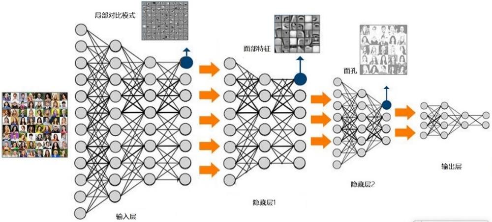
第 87 页 · 如图6-15所示，深度学习的工作原理如下：
如图6-15所示，深度学习的工作原理如下：
（1）在最低级别，网络固定局部对比度的模式同样重要。
（2）下面的图层可以使用局部对比度的图案来固定类似眼睛，鼻子和嘴巴的东西
（3）顶层能够将这些面部特征应用于面部模板。
（4）深度神经网络能够在其每个连续层中组成越来越复杂的特征。
因此可见，深度学习网络可以通过从没有适当标签的输入数据组成的数据集中得出推论来克服机器学习的缺点。
6.6 深度学习的应用
第 88 页 · 下面再来了解一些深度学习的典型应用案例。
下面再来了解一些深度学习的典型应用案例。
示例1：语音识别。Siri是苹果设备的语音控制智能助手。与其他大厂一样，苹果公司也投资深度学习，以提供比以往更好的服务。
在像Siri这样的语音识别和语音控制智能助手领域，人们可以使用深度神经网络开发更准确的声学模型，并且这也是深度学习实施最活跃的领域之一。简单来说，可以构建这样的系统，学习新功能或根据自己进行调整，从而通过预先预测所有可能性来提供更好的帮助。
6.6 深度学习的应用
第 89 页 · 示例2：自动机器翻译。我们知道，谷歌可以即时翻译100种不同的人类语言。谷歌翻译背后的技术就是机器翻译，并且因为说话语言
示例2：自动机器翻译。我们知道，谷歌可以即时翻译100种不同的人类语言。谷歌翻译背后的技术就是机器翻译，并且因为说话语言不同而成为不能相互交流的人的救星。虽然这个功能已存在很长时间了，但近年来，在深度学习的帮助下，谷歌改革了其机器翻译方法。事实上，对语言翻译几乎一无所知的深度学习研究人员正在提出相对简单的机器学习解决方案，这些解决方案正在击败世界上最好的专家构建的语言翻译系统。可以在不对序列进行任何预处理的情况下执行文本转换，从而允许算法学习单词之间的依赖关系以及它们与新语言的映射。
6.6 深度学习的应用
第 90 页 · 示例3：即时视觉翻译。深度学习用于识别具有字母的图像以及字母在场景中的位置。识别后，可以将它们转换为文本，翻译并使用翻译
示例3：即时视觉翻译。深度学习用于识别具有字母的图像以及字母在场景中的位置。识别后，可以将它们转换为文本，翻译并使用翻译后的文本重新创建图像。这通常被称为即时视觉翻译。现在，想象一下你旅游过但对当地语言未知的任何地区，使用谷歌翻译等各种应用程序，可以进行即时视觉翻译，阅读用其他语言编写的标志或商店板。这因为深度学习才可能做到。
6.6 深度学习的应用
第 91 页 · 示例4：自动驾驶汽车行为。谷歌正试图通过深度学习技术，将其自动驾驶汽车计划（称为WAYMO）提升到一个全新水平。因此，现
示例4：自动驾驶汽车行为。谷歌正试图通过深度学习技术，将其自动驾驶汽车计划（称为WAYMO）提升到一个全新水平。因此，现在可以使用不同传感器提供的数据来编程可以自行学习的系统，而不是使用旧的手工编码算法。深度学习现在是大多数感知任务以及许多低级控制任务的最佳方法。因此，现在即使不知道开车或残疾的人也可以继续前行而不依赖其他人。
这些典型的应用案例都广泛使用了深度学习技术并显示出有希望的结果。深度学习还有许多其他应用以及许多尚待探索的领域。
6.6 深度学习的应用
第 92 页 · 01

01
动物的中枢
神经系统
02
了解人工
神经网络
03
深度学习
的定义
04
卷积
神经网络
目录 / CONTENTS
05
迁移学习
06
深度学习
的应用
第 93 页 · 第6章
第6章
周苏 教授 QQ：81505050
神经网络与深度学习